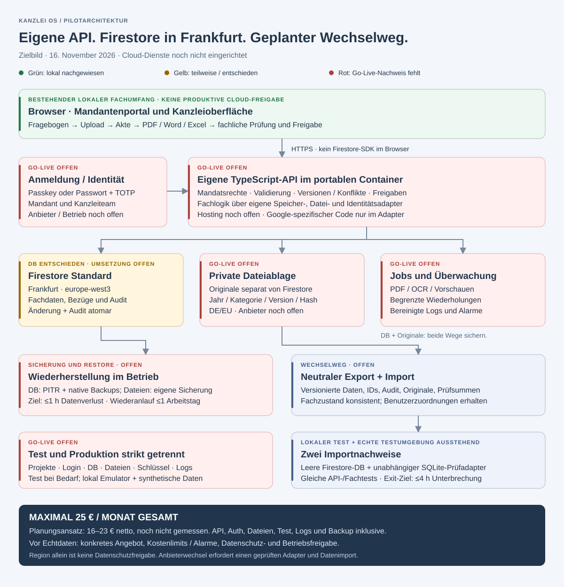

Firestore hinter unserer eigenen TypeScript-API. Die Übersicht trennt vorhandene lokale Funktionen, getroffene Entscheidungen und die noch offenen Schritte bis zum Betrieb mit echten Mandantendaten.
Ein gemeinsames Container-Paket: Anwendung und Anmeldung sollen auf verschiedenen geeigneten Servern laufen können. Firestore bleibt extern. Paket, echte API und Anmeldung sind noch umzusetzen.
Kritische Prüfung, Container-Diagramm und sechs Schritte zum Prototypen öffnen
Offene Plattformentscheidungen · sieben Vorlagen mit unabhängiger Challenge
Ampeln und Skilltree öffnen · Architekturvertrag und Abnahmekriterien · Diagramm als SVG herunterladen

Standort: Eine bestehende Firestore-Datenbank lässt sich nicht auf eine andere Region umstellen. Dazu braucht es eine neue Datenbank und eine Migration. Standorte für Login, Dateien, API und Logs müssen separat festgelegt werden. Google-Dokumentation zu Standorten.
Die folgende ursprüngliche Skizze beschreibt die langfristigen Schnittstellen. Ihre Bereichsfarben sind keine Go-Live-Ampeln. Maßgeblich für den aktuellen Umsetzungsstand sind der Pilot oben und die verlinkte Go-Live-Übersicht.
Eine Anbindung deckt fast alle amtlichen Übermittlungen ab: ESt, KSt, GewSt, UStVA, ZM, Lohnsteueranmeldung, E-Bilanz. Dazu kommen der Abruf vorausgefüllter Daten und von Bescheiddaten. Die Bibliothek ist kostenlos, eine eigene Hersteller-ID ist Pflicht.
Die Steuerberechnung, die Lohnabrechnung (Meldungen an die Sozialversicherung nur mit ITSG-Zertifikat) und die Abschlusserstellung kommen aus Fachsoftware. Die wird nach der Offenheit ihrer API ausgewählt.
ERiC ist eine C-Bibliothek und läuft nicht im Browser. Ein eigener ERiC-Dienst in der EU-Cloud übernimmt Übermittlung, Zertifikate und Protokolle.
Priorität 1 brauchen wir für die Einkommensteuer, Priorität 2 für FiBu und Lohn, Priorität 3 später oder optional.
| Bereich | Richtung | Standard / Protokoll | Gegenstelle | Zugang / Voraussetzung | Prio |
|---|---|---|---|---|---|
| Finanzverwaltung (alles über ERiC) | |||||
| Einkommensteuer, später KSt und GewSt | → | ERiC-Bibliothek (C), Datensätze im ELSTER-XML-Schema; Testmodus mit Testmerker | Finanzverwaltung | eigene Hersteller-ID (kostenlos, Registrierung beim BayLfSt), Kanzleizertifikat; Pflichten als Hersteller nach § 87c AO | 1 |
| Vorausgefüllte Daten (VaSt) | ← | ERiC, Belegabruf | Finanzverwaltung | Vollmacht des Mandanten über die Vollmachtsdatenbank der Kammern (Kosten je Vollmacht) | 1 |
| Bescheiddaten | ← | ERiC, Abruf von Bescheiddaten | Finanzverwaltung | wie oben; Verfahrensdetails im Entwicklerbereich prüfen | 2 |
| UStVA, ZM, Lohnsteueranmeldung | → | ERiC | Finanzverwaltung | gleiche Hersteller-ID | 2 |
| E-Bilanz (§ 5b EStG) | → | XBRL nach amtlicher Taxonomie, über ERiC | Finanzverwaltung | Abschluss kommt aus der Fachsoftware | 3 |
| Fachsoftware | |||||
| Buchungen und Stammdaten | → | DATEV-Format (EXTF-Buchungsstapel, CSV), der faktische Standard aller Anbieter | DATEV, Stotax, Addison, Agenda, HMD, BMD … | keiner; Spezifikation öffentlich bei DATEV | 2 |
| Steuerfall anlegen, Berechnung zurücklesen | ↔ | Hersteller-API, sofern vorhanden (Stotax wirbt mit offener Web-API; DATEV ohne API zum Erstellen von Erklärungen) | gewählte Fachsoftware | Anbietergespräch, Sandbox, Kosten je Aufruf | 2 |
| Belege in die Fachsoftware | → | DATEV Belegbilderservice / Hersteller-Import | DATEV und andere | Entwicklerportal, Kosten beim Anwender | 3 |
| Software ohne API | ↔ | RPA oder KI-Agent über die Oberfläche | beliebig | nur als Brücke: bricht leicht, GoBD-Protokoll nötig | 3 |
| Lohn | |||||
| Lohnabrechnung | ↔ | REST-API des Lohnanbieters (z. B. Lohnfluss, in Zertifizierung) oder Kanzlei-Lohnsoftware | ITSG-zertifizierter Anbieter | Lohn nie selbst bauen: Meldungen an die SV nur mit zertifizierter Software | 2 |
| SV-Meldungen, eAU | → | DEÜV-Meldeverfahren über das Kommunikationsserver-Netz | Krankenkassen, DRV | läuft komplett beim Lohnanbieter | 2 |
| Eingänge | |||||
| Mandantenportal | ↔ | HTTPS, eigene API; Identifizierung nach GwG optional per eID | Mandanten | Hosting in der EU, Auftragsverarbeitung geregelt | 1 |
| PDF und Fotos | ← | PDF-Text (pdf.js), OCR nur bei Scans (z. B. Tesseract lokal) | Mandanten | keine Weitergabe an Drittdienste nötig | 1 |
| E-Rechnungen | ← | XRechnung (UBL/CII), ZUGFeRD (PDF/A-3 mit XML), optional Peppol | Lieferanten der Mandanten | Empfangspflicht B2B seit 2025 | 2 |
| Bankumsätze | ← | PSD2 (XS2A), FinTS/HBCI, EBICS; Kontoauszug als camt.053 | Banken, über Dienstleister wie finAPI | Einwilligung des Mandanten, Vertrag mit dem Dienstleister | 2 |
Offen: Wer rechnet die Steuer? ERiC prüft und übermittelt, berechnet nach unserem Kenntnisstand aber keine Steuer. Für einfache Fälle wäre eine eigene Berechnung denkbar, sonst kommt sie aus der Fachsoftware. Das ist die wichtigste Frage für die Anbietergespräche.